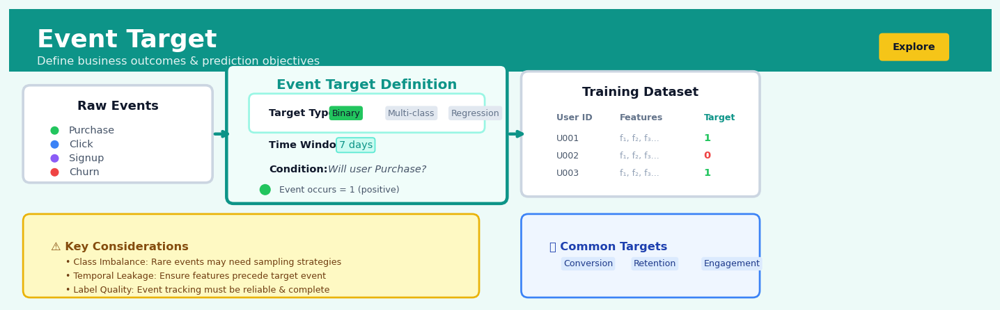

Event Target#


The most critical mistake with event targets is defining them without considering the minimum observation window required for meaningful predictions. If you're predicting purchase within 7 days but only have 5 days of historical data per user, you're creating label leakage and your model will catastrophically fail in production. Always ensure your training data has completed the full target window before labeling, even if it means sacrificing recent samples.
The 60-Second Version#
What it does: Event Target converts a stream of timestamped events into yes/no labels by looking forward in time from each observation point to see if something specific happened next.
When to use it: You have event logs (purchases, clicks, machine alerts) and need to predict whether something will happen in the next N days, but your data doesn’t have a ready-made “yes/no” column.
What you get back: A structured dataset with one row per observation moment, a binary label showing whether the outcome occurred, and a clear time boundary ensuring you only use information that existed before each prediction point.
Difficulty |
Moderate |
Typical runtime |
Minutes on 1M events |
What you bring |
Timestamped event log with customer/entity IDs |
What you get |
Observation-level dataset with outcome labels |
Heuristix bucket |
Explore — Shaping & Transforming Data |
Getting the time windows wrong will train your model on information from the future, making it useless in production.
Learning Objectives#
After reading this chapter, a business user will be able to:
Identify scenarios where prediction targets must be constructed from event sequences, such as defining customer churn from transaction gaps or fraud labels from dispute timelines.
Interpret observation windows and outcome horizons in plain language, explaining to stakeholders which historical period informs predictions and which future period defines success or failure.
Specify valid business requirements for target definitions—including minimum event frequencies, outcome time horizons, and exclusion criteria—that balance predictive signal with operational constraints.
After reading this chapter, a data scientist will be able to:
Implement Event Target construction with correct temporal boundaries to prevent label leakage, including gap periods between observation windows and outcome horizons.
Tune observation window lengths and outcome horizons by analyzing the trade-off between sample size, label prevalence, prediction lead time, and model performance.
Diagnose common failure modes including sparse event coverage, class imbalance from horizon mismatch, and temporal leakage from misaligned window boundaries using validation checks and temporal holdout tests.
Overview#
Event Target is a feature engineering technique that constructs binary or multi-class target variables from raw event data by defining observation windows and outcome horizons. It belongs to the family of target construction and temporal feature engineering methods used in supervised learning pipelines where the prediction target is not explicitly present in the source data but must be derived from sequences of timestamped events. The core purpose is to transform longitudinal event logs—such as transaction histories, user activity streams, or sensor readings—into a properly structured dataset suitable for classification or time-to-event modelling, while rigorously handling temporal leakage and ensuring valid train-test separation.
When to Use This#
Use this when you have timestamped event data and need to predict whether a specific event type will occur within a future time window (e.g., predicting customer churn within 90 days based on activity in the prior 6 months)
Use this when your raw data contains only event logs without an explicit target variable, and you need to construct one retrospectively for model training
Use this when building propensity models where the outcome of interest is defined by the occurrence (or non-occurrence) of particular events after a reference point
Use this when the definition of “positive outcome” involves temporal logic—for example, a customer who purchases within 30 days of receiving a promotion
Use this when you need to create multiple target definitions from the same underlying event stream to compare model performance across different outcome horizons
Use this when regulatory or business requirements mandate explicit separation between features (computed from the observation window) and targets (computed from the outcome window)
Do NOT use this when your target variable is already present as a column in your dataset and requires no temporal derivation
Do NOT use this when the events lack reliable timestamps or when timestamp quality is poor (missing values, incorrect time zones, future-dated records)
Do NOT use this when you have continuous outcomes that require regression—Event Target is designed for discrete event occurrences
Do NOT use this when the outcome is instantaneous and co-occurs with the predictive features, as this introduces label leakage by construction
Questions This Answers#
Predicting Customer Behavior and Churn#
Will this customer cancel their subscription in the next 90 days?
Which of our active users are most likely to stop engaging with the product in the next month?
Can we identify customers at risk of leaving before they actually churn so we can intervene?
Who should our retention team call this week to prevent cancellations?
Forecasting Business Events and Conversions#
What’s the probability that a trial user will convert to paid within their first 30 days?
Which leads from this campaign are likely to make a purchase in the next two weeks?
How many of our current customers will make a repeat purchase within 60 days?
Are customers who engage with support in their first week more likely to renew after six months?
Timing and Intervention Strategy#
When should we send the upgrade offer — immediately after signup or after 14 days of usage?
If we contact a customer on day 45, what’s the likelihood they’ll still be active on day 90?
Should we prioritize outreach to customers who haven’t logged in for 7 days or wait until 14 days?
Risk Assessment and Early Warning#
Can we predict payment defaults 30 days before they happen based on transaction patterns?
Which accounts are showing early warning signs of fraud in their first 10 transactions?
How do we identify high-risk cases early enough to take preventive action rather than just reacting after the fact?
How It Works#
Imagine you’re a doctor trying to predict which patients will be readmitted to the hospital within 30 days. You have years of medical records—every visit, every prescription, every lab test—but no column labeled “readmitted: yes/no.” To build your prediction model, you need to do detective work through time: for each patient visit, look backward at their history (that’s what you know at the moment of discharge), then look forward 30 days into their future (that’s your outcome). If they came back within that window, label it “yes.” If they didn’t, label it “no.” Now you have targets. Event Target automates exactly this time-traveling labeling process across thousands of events, making sure you never accidentally use future information when creating your training examples.
RAW EVENT LOG EVENT TARGET PROCESS
(timestamped events)
┌─────────────────────────────┐
Customer │ Event │ Date │ For each observation point: │
─────────┼──────────┼────── │ │
Alice │ Login │ Jan 1 │ 1. Set observation window │
Alice │ Purchase │ Jan 5 │ ←────────┐ │
Alice │ Login │ Jan 20 │ ▼ │
Bob │ Login │ Jan 3 │ 2. Look backward: features │
Bob │ Purchase │ Jan 10 │ │
Bob │ Login │ Jan 12 │ 3. Look forward: outcome │
│ ─────────▶ │
↓ Transform ↓ └─────────────────────────────┘
LABELED TRAINING DATA
(one row per observation)
Customer │ Obs Date │ Prior Logins │ Target: Purchased
─────────┼──────────┼──────────────┼──────────────────
Alice │ Jan 1 │ 0 │ Yes (5 days later)
Bob │ Jan 3 │ 0 │ Yes (7 days later)
Alice │ Jan 20 │ 2 │ No (no purchase after)
Step 1: Choose your observation points. Event Target starts by identifying moments in time when you’d want to make a prediction—maybe every customer’s first login, or every hospital discharge, or the end of each month. These become the rows in your eventual training dataset.
Step 2: Define the observation window. For each observation point, draw a line in the sand: everything before this moment is “known history” that can be used as input features. Typically you look back days, weeks, or months to summarize what happened before (number of logins, average transaction size, days since last event).
Step 3: Set the outcome horizon. Now look forward from the observation point into a future time window—say, the next 7 days or next 30 days. This is where you hunt for the outcome event you care about: Did the customer purchase? Did the machine fail? Did the patient return?
Step 4: Label the target variable. If the outcome event happened within that forward-looking horizon, mark the observation as “positive” (Yes, 1, True). If the horizon passed with no outcome event, mark it “negative” (No, 0, False). If there are multiple possible outcomes, you can create multi-class labels.
Step 5: Apply temporal constraints. Critically, Event Target enforces that features can only use data from before the observation point, and the target only considers data after it. This ironclad separation prevents leakage—accidentally training on information from the future.
Step 6: Repeat across all observations. The process runs for every observation point across all entities (customers, patients, machines), creating a complete labeled dataset ready for model training.
The key insight: Event Target works because it formalizes the time-traveling logic humans naturally use when reasoning about predictions, automatically enforcing the temporal boundaries that separate what you know from what you’re trying to predict.
The Intuition#
Imagine you are a bank manager trying to predict which customers will default on their loans in the next six months. Your data warehouse contains millions of transaction records: deposits, withdrawals, missed payments, customer service calls, and account changes. None of these records explicitly say “this customer will default.” Instead, you must construct the target variable yourself by looking at future events.
The fundamental insight behind Event Target is that supervised learning requires a clear separation between what the model can see (features) and what the model must predict (the target). When working with event data, this separation is temporal: features must be computed only from events that occurred before a reference point, while the target must be computed only from events that occurred after that reference point. The reference point itself—often called the observation date or snapshot date—acts as a “wall” that prevents information leakage.
Think of it like placing a one-way mirror at a specific moment in time. Standing on the feature side, you can look back into the past and see everything that has happened to each customer. Standing on the target side, you look forward and record whether the event of interest occurs. The model learns to recognise patterns in the backward-looking view that predict events in the forward-looking view. If you accidentally allow information from the future to leak through the mirror—even a single variable—your model will appear to perform brilliantly in development but fail catastrophically in production, because in production the future has not happened yet.
The practical challenge is that real event data is messy. Customers join at different times, events arrive out of order, and business definitions of “churn” or “conversion” evolve. Event Target provides a rigorous framework for handling these complexities: it defines observation windows (how far back to look for feature computation), outcome windows (how far forward to look for target construction), and censoring rules (what to do when customers leave or when the data ends before the outcome window closes). This framework ensures that the resulting dataset is both analytically valid and operationally deployable.
The Mathematics#
Problem Setup and Notation#
Let \(\mathcal{E}\) denote a set of events, where each event \(e \in \mathcal{E}\) is a tuple:
where \(i \in \mathcal{I}\) is the entity identifier (e.g., customer ID), \(t \in \mathbb{R}\) is the timestamp, \(c \in \mathcal{C}\) is the event category, and \(\mathbf{a} \in \mathbb{R}^p\) is a vector of event attributes.
For each entity \(i\), define the event history as:
We define a reference point \(t_0^{(i)}\) for each entity—the moment at which we make a prediction. The observation window \([t_0^{(i)} - \Delta_{\text{obs}}, t_0^{(i)}]\) contains events used for feature computation. The outcome window \((t_0^{(i)}, t_0^{(i)} + \Delta_{\text{out}}]\) contains events used for target construction.
Target Variable Construction#
Let \(\mathcal{C}^+ \subseteq \mathcal{C}\) denote the set of positive event categories—those that define the outcome of interest. The binary target variable for entity \(i\) is:
where \(\mathbb{1}[\cdot]\) is the indicator function.
For time-to-event targets, we compute:
with \(T_i = \infty\) if no positive event occurs.
Censoring#
Entities may be right-censored if:
The data collection ends before the outcome window closes: \(t_{\text{max}} < t_0^{(i)} + \Delta_{\text{out}}\)
A competing event occurs (e.g., customer closes account): \(\exists\, e \in \mathcal{E}_i : e.c \in \mathcal{C}^{\text{censor}} \land e.t \in (t_0^{(i)}, t_0^{(i)} + \Delta_{\text{out}}]\)
Define the censoring indicator:
For survival analysis, the observed time is:
where \(C_i\) is the censoring time.
Multiple Reference Points#
To maximise training data, we may define multiple reference points per entity. Let \(\mathcal{T}_i = \{t_0^{(i,1)}, t_0^{(i,2)}, \ldots, t_0^{(i,K_i)}\}\) be a set of reference points for entity \(i\).
Non-overlapping constraint: To ensure independence, we require:
where \(\Delta_{\text{gap}} \geq 0\) is a buffer period.
Class Imbalance Considerations#
The expected positive rate depends on the outcome window length. If events occur according to a homogeneous Poisson process with rate \(\lambda_i\) for entity \(i\), then:
For rare events, this approximates:
This relationship guides the choice of \(\Delta_{\text{out}}\): longer windows increase the positive rate but may introduce heterogeneity in the prediction task.
Temporal Leakage Formal Condition#
A feature \(X_j\) computed for entity \(i\) at reference point \(t_0^{(i)}\) is leak-free if and only if:
In practice, this means \(X_j^{(i)}\) must be computed exclusively from events with \(e.t \leq t_0^{(i)}\).
Understanding the Mathematics#
The Observation Window#
The equation:
Read it aloud:
“The observation window for prediction point i spans from the observation start time (which is the prediction time minus the observation duration) up to and including the prediction time itself.”
What each symbol means:
\(W_i\) = the time range we look backward from to gather features for prediction i
\(t_i\) = the specific moment when we want to make a prediction (“now”)
\(\Delta_{\text{obs}}\) = how far back in time we look (the observation window length)
\([a, b]\) = a closed interval from time a to time b, including both endpoints
A concrete numerical example:
Suppose we’re predicting customer churn at a telecommunications company. We make a prediction on January 31, 2024 (so \(t_i\) = Jan 31). Our observation window is 90 days (\(\Delta_{\text{obs}}\) = 90 days). Then:
We use only customer behaviour between November 2 and January 31 to build features for this prediction.
Why this equation matters:
Without a clearly bounded observation window, we’d risk using future information to predict the past—a fatal error called temporal leakage that makes models useless in production.
The Outcome Horizon#
The equation:
Read it aloud:
“The outcome horizon for prediction point i starts after the gap period ends and extends until the gap plus the outcome window together have elapsed from the prediction time.”
What each symbol means:
\(H_i\) = the future time range where we look for whether the target event occurred
\(t_i\) = the prediction time (same as above)
\(\Delta_{\text{gap}}\) = a buffer period immediately after \(t_i\) where we ignore all events
\(\Delta_{\text{outcome}}\) = how far into the future we look for the outcome
\((a, b]\) = a half-open interval: excludes time a, includes time b
A concrete numerical example:
Continuing our churn example: prediction time is January 31 (\(t_i\) = Jan 31). We allow a 7-day gap (\(\Delta_{\text{gap}}\) = 7 days) because contract cancellations aren’t instant. We then look 60 days forward (\(\Delta_{\text{outcome}}\) = 60 days). Then:
We label this customer as “churned” only if their cancellation event falls between February 8 and April 7 (the open parenthesis means February 7 itself doesn’t count).
Why this equation matters:
The gap prevents us from cheating by using events that are already “in motion” when we predict, and the finite horizon ensures we’re predicting when something happens, not just if it ever will.
The Target Label Function#
The equation:
Read it aloud:
“The target label for prediction i equals one if there exists at least one event in our event log whose timestamp falls within the outcome horizon and whose event type matches our target event type; otherwise it equals zero.”
What each symbol means:
\(y_i\) = the binary label (0 or 1) we’re trying to predict
\(\mathbb{1}(\cdot)\) = indicator function: equals 1 if the condition inside is true, 0 otherwise
\(\exists\) = “there exists”
\(e\) = a single event (like a transaction or customer action)
\(\mathcal{E}\) = the complete event log (all recorded events)
\(t_e\) = the timestamp when event e occurred
\(\land\) = logical “and”
\(\tau_{\text{target}}\) = the specific type of event we care about (e.g., “account_closed”)
A concrete numerical example:
Customer #1234’s event log contains these events:
Feb 5, 2024: support_call
Mar 15, 2024: account_closed
Apr 10, 2024: payment_bounced
Our outcome horizon \(H_i\) is (Feb 7, Apr 7]. The target event type \(\tau_{\text{target}}\) = “account_closed”.
Does an “account_closed” event exist between Feb 8 and Apr 7? Yes—March 15 qualifies. Therefore \(y_i = 1\).
Why this equation matters:
This is the single source of truth for labelling: it ensures every training example is labelled consistently, reproducibly, and without human judgment calls that don’t scale.
The Big Picture#
The mathematics of Event Target solves a deceptively hard problem: converting messy, asynchronous event streams into clean rows of features and labels without accidentally using the future to predict the past. Each equation enforces a temporal boundary—where we look back for context, where we pause to avoid leakage, and where we look forward for outcomes. This rigid temporal segmentation is non-negotiable because even a single mislabelled example where outcome information “leaks” into features will poison model training and produce overly optimistic metrics that collapse in production. In essence, the math is a set of gates that ensure time only flows forward.
Python Implementation#
import pandas as pd
import numpy as np
from datetime import timedelta
from typing import List, Optional, Tuple
def create_event_target(
events: pd.DataFrame,
entity_col: str,
timestamp_col: str,
event_type_col: str,
reference_dates: pd.DataFrame,
positive_events: List[str],
outcome_window_days: int,
censoring_events: Optional[List[str]] = None,
return_time_to_event: bool = False
) -> pd.DataFrame:
"""
Construct binary target variable from event data.
Parameters
----------
events : pd.DataFrame
Event log with entity ID, timestamp, and event type
entity_col : str
Column name for entity identifier
timestamp_col : str
Column name for event timestamp
event_type_col : str
Column name for event category
reference_dates : pd.DataFrame
DataFrame with entity_col and 'reference_date' columns
positive_events : List[str]
Event types that define a positive outcome
outcome_window_days : int
Number of days in the outcome window
censoring_events : Optional[List[str]]
Event types that cause right-censoring
return_time_to_event : bool
Whether to return time-to-event instead of binary target
Returns
-------
pd.DataFrame
Reference dates with target variable and censoring indicator
"""
# Ensure timestamps are datetime
events = events.copy()
events[timestamp_col] = pd.to_datetime(events[timestamp_col])
reference_dates = reference_dates.copy()
reference_dates['reference_date'] = pd.to_datetime(reference_dates['reference_date'])
# Calculate outcome window end for each reference point
reference_dates['outcome_window_end'] = (
reference_dates['reference_date'] + timedelta(days=outcome_window_days)
)
results = []
for _, ref_row in reference_dates.iterrows():
entity_id = ref_row[entity_col]
ref_date = ref_row['reference_date']
window_end = ref_row['outcome_window_end']
# Filter to this entity's events in the outcome window
entity_events = events[
(events[entity_col] == entity_id) &
(events[timestamp_col] > ref_date) &
(events[timestamp_col] <= window_end)
].sort_values(timestamp_col)
# Check for positive events
positive_mask = entity_events[event_type_col].isin(positive_events)
positive_occurred = positive_mask.any()
# Calculate time to event if requested
time_to_event = np.nan
if positive_occurred:
first_positive = entity_events.loc[positive_mask, timestamp_col].min()
time_to_event = (first_positive - ref_date).days
# Check for censoring
censored = False
if censoring_events is not None:
censor_mask = entity_events[event_type_col].isin(censoring_events)
if censor_mask.any():
first_censor = entity_events.loc[censor_mask, timestamp_col].min()
# Only censored if censoring occurs before positive event
if not positive_occurred or first_censor < entity_events.loc[positive_mask, timestamp_col].min():
censored = True
if not positive_occurred:
time_to_event = (first_censor - ref_date).days
results.append({
entity_col: entity_id,
'reference_date': ref_date,
'target': int(positive_occurred and not censored),
'censored': int(censored),
'time_to_event': time_to_event if return_time_to_event else None
})
result_df = pd.DataFrame(results)
if not return_time_to_event:
result_df = result_df.drop(columns=['time_to_event'])
return result_df
# Example 1: Customer Churn Prediction
# ------------------------------------
print("=" * 60)
print("Example 1: Customer Churn Prediction")
print("=" * 60)
# Create synthetic event data for a subscription service
np.random.seed(42)
n_customers = 1000
n_events = 10000
customer_ids = np.random.randint(1, n_customers + 1, n_events)
event_types = np.random.choice(
['login', 'purchase', 'support_ticket', 'cancellation', 'subscription_pause'],
n_events,
p=[0.5, 0.25, 0.15, 0.05, 0.05]
)
# Generate timestamps over 2 years
base_date = pd.Timestamp('2022-01-01')
timestamps = base_date + pd.to_timedelta(np.random.randint(0, 730, n_events), unit='D')
events_df = pd.DataFrame({
'customer_id': customer_ids,
'event_timestamp': timestamps,
'event_type': event_types
})
# Define reference dates (observation points) for each customer
# Using the date 1 year into the observation period
reference_df = pd.DataFrame({
'customer_id': range(1, n_customers + 1),
'reference_date': pd.Timestamp('2023-01-01')
})
# Construct churn target: cancellation within 90 days
churn_target = create_event_target(
events=events_df,
entity_col='customer_id',
timestamp_col='event_timestamp',
event_type_col='event_type',
reference_dates=reference_df,
positive_events=['cancellation'],
outcome_window_days=90,
censoring_events=['subscription_pause']
)
print("\nChurn Target Distribution:")
print(churn_target['target'].value_counts(normalize=True))
print(f"\nCensored observations: {churn_target['censored'].sum()}")
print("\nSample output:")
print(churn_target.head(10))
# Example 2: Multiple Outcome Windows Comparison
# ----------------------------------------------
print("\n" + "=" * 60)
print("Example 2: Comparing Different Outcome Windows")
print("=" * 60)
window_comparisons = []
for window_days in [30, 60, 90, 180]:
target_df = create_event_target(
events=events_df,
entity_col='customer_id',
timestamp_col='event_timestamp',
event_type_col='event_type',
reference_dates=reference_df,
positive_events=['cancellation'],
outcome_window_days=window_days
)
positive_rate = target_df['target'].mean()
window_comparisons.append({
'outcome_window_days': window_days,
'positive_rate': positive_rate,
'positive_count': target_df['target'].sum()
})
comparison_df = pd.DataFrame(window_comparisons)
print("\nPositive Rate by Outcome Window Length:")
print(comparison_df.to_string(index=False))
#
## Visualisations


## Using This in Heuristix
### What You'll Need
The Event Target node expects a **single table of timestamped events** with at least three columns:
- **Entity ID** (text/numeric): The subject of prediction—user_id, customer_id, device_id, etc.
- **Timestamp** (datetime): When each event occurred
- **Event type** (text/categorical): What happened—"purchase", "login", "churn", "claim_filed", etc.
Optional but helpful: additional event attributes like transaction amount, product category, or status flags.
**Before** (raw event log):
user_id |
event_time |
event_type |
|---|---|---|
A001 |
2024-01-15 09:23:00 |
login |
A001 |
2024-01-20 14:10:00 |
purchase |
A001 |
2024-02-10 08:45:00 |
login |
**After** (observation rows with targets):
user_id |
observation_date |
target_purchased_30d |
|---|---|---|
A001 |
2024-01-15 00:00:00 |
1 |
A001 |
2024-01-20 00:00:00 |
0 |
### Configuration Parameters
| Parameter | What It Does | Sensible Default | When to Change |
|-----------|-------------|-----------------|----------------|
| **Entity ID Column** | Identifies which column groups events by subject | First text/ID column | Always verify this points to your customer/user/device identifier |
| **Timestamp Column** | The datetime field for event ordering | First datetime column | Change if you have multiple time fields (created_at vs. processed_at) |
| **Observation Event** | Event type that triggers a prediction opportunity | (required) | Set to events where you'd naturally make a prediction: "visit", "call_start", "policy_renewal" |
| **Outcome Event** | Event type defining success/failure | (required) | Your business outcome: "purchase", "churn", "readmission", "claim" |
| **Outcome Horizon (days)** | How far forward to look for the outcome | 30 | Shorten for fast-moving behavior (7 days for app retention), lengthen for slower cycles (90 days for B2B sales) |
| **Observation Window (days)** | Lookback period for feature history | 90 | Match to your data availability and business cycle—longer windows need more historical data |
| **Minimum Events** | Drop entities with fewer than N events | 3 | Increase for high-quality training data; decrease to preserve sample size |
### Quick Start
1. **Connect your event log** to the Event Target node
2. **Set Observation Event** to the trigger moment (e.g., "page_view" or "session_start")
3. **Set Outcome Event** to what you want to predict (e.g., "conversion" or "cancellation")
4. **Set Outcome Horizon** to your prediction window (typically 7, 14, or 30 days)
5. **Run the node** and inspect the target distribution in the output panel
6. **Connect to a Splitter node** to create train/test sets with proper temporal ordering
### What You'll Get Back
The node outputs a transformed table where **each row is an observation window** rather than a single event:
- **Original entity ID column** (preserved)
- **observation_date**: Start of the observation window
- **target_[outcome]**: Binary flag (1 = outcome occurred within horizon, 0 = did not)
- **observation_window_events**: Count of events during lookback period
The **Metrics panel** displays:
- Total observations created
- Target prevalence (% positive class)
- Entity count and average observations per entity
- Date range of observations
A **timeline visualization** shows observation and outcome windows for sample entities, helping you verify temporal logic.
### Downstream Connections
**Typical next steps:**
- **Temporal Splitter** → Creates train/test split respecting time order (prevents leakage)
- **Event Features** → Engineers aggregate features from the observation window
- **Join Node** → Merges in static entity attributes (demographics, account type)
- **Model Training** → Any classification node (Logistic Regression, XGBoost, etc.)
### Pro Tips
1. **Check target balance first**: If you get 0.5% or 95% positive class, adjust your outcome event definition or horizon before building features—severely imbalanced targets often need resampling or different business logic.
2. **Align observation events with real prediction moments**: Setting observation_event to "any activity" creates unrealistic scenarios. Choose events where you'd actually intervene (email send, login, subscription renewal date).
3. **Use multiple outcome horizons**: Create 7-day, 14-day, and 30-day targets simultaneously to understand how predictability changes over time—short horizons are often more accurate but less actionable.
4. **Mind the cold start**: Entities without enough observation window history get dropped. If you're losing too many recent users, shorten the observation window or create a separate "new user" model.
5. **Validate with domain experts**: Show the sample timeline visualization to business stakeholders—they'll quickly spot if your outcome definition doesn't match the real decision process.
## Config Recipes
### Recipe 1: Rapid Prototyping
**When to use:** Initial exploration when you need quick feedback on whether event sequences predict outcomes at all, working with a new dataset where optimal windows are unknown.
**Settings:**
| Parameter | Value | Why |
|-----------|-------|-----|
| `observation_window` | 30 days | Short enough to capture recent behavior, long enough for signal |
| `outcome_horizon` | 7 days | Quick turnaround minimizes data loss from right-censoring |
| `gap_period` | 0 days | Skip temporal gap to maximize training examples |
| `min_events` | 1 | No filtering—see all patterns first |
| `sampling_strategy` | `'last_per_entity'` | One row per entity, simplest possible split |
**What you get:** Maximum number of training examples with minimal configuration overhead, ideal for establishing baseline predictive power.
**Trade-off:** Zero temporal gap creates leakage risk; last-observation sampling may miss temporal dynamics entirely.
---
### Recipe 2: Production-Grade Deployment
**When to use:** Model going into production where prediction timing mirrors real operational constraints and regulatory audit requires defensible temporal separation.
**Settings:**
| Parameter | Value | Why |
|-----------|-------|-----|
| `observation_window` | 90 days | Long enough to capture seasonal patterns and stable behavior |
| `outcome_horizon` | 30 days | Matches business planning cycle for actionable predictions |
| `gap_period` | 7 days | Prevents leakage from delayed event logging or processing latency |
| `min_events` | 5 | Filters noise from sporadic/accidental interactions |
| `sampling_strategy` | `'time_stratified'` | Maintains temporal order for walk-forward validation |
| `validation_split` | 0.15 | Held-out recent data for honest performance estimation |
**What you get:** Temporally valid dataset with reduced leakage risk, suitable for time-series cross-validation and realistic performance metrics.
**Trade-off:** Stricter filters reduce dataset size by 30–50%; longer windows exclude recently onboarded entities.
---
### Recipe 3: High-Churn Environment (Subscription/SaaS)
**When to use:** Predicting churn when most customers have short lifecycles (median tenure <6 months) and early intervention is critical.
**Settings:**
| Parameter | Value | Why |
|-----------|-------|-----|
| `observation_window` | 14 days | Captures immediate pre-churn behavior without requiring long history |
| `outcome_horizon` | 21 days | Three-week warning window enables retention campaigns |
| `gap_period` | 2 days | Minimal gap—early signal more valuable than perfect temporal hygiene |
| `min_events` | 2 | Very low bar—even minimal engagement is signal in high-churn contexts |
| `resampling_rate` | `'weekly'` | Multiple observations per entity track engagement trajectory |
**What you get:** Multiple training examples per short-tenure customer, capturing behavioral change over time rather than static snapshots.
**Trade-off:** Correlated samples from same entity require grouped cross-validation; model may overfit to individual behavior patterns.
---
### Recipe 4: Rare Catastrophic Events (Fraud/System Failure)
**When to use:** Predicting rare events (prevalence <2%) where outcomes are delayed by investigation/confirmation processes but early detection is crucial.
**Settings:**
| Parameter | Value | Why |
|-----------|-------|-----|
| `observation_window` | 180 days | Wide window captures rare precursor patterns |
| `outcome_horizon` | 90 days | Long horizon accounts for investigation/confirmation lag |
| `gap_period` | 14 days | Substantial buffer for delayed reporting or detection |
| `min_events` | 10 | Higher bar reduces false positive rate in imbalanced setting |
| `positive_class_weight` | 10.0 | Explicitly handle class imbalance during target construction |
| `sampling_strategy` | `'balanced_stratified'` | Oversample positive class to create workable training set |
**What you get:** Balanced training set for rare events with long look-ahead period matching real detection delays.
**Trade-off:** Aggressive rebalancing may not reflect production score distributions; requires calibration post-training.
## Business Applications
**Financial Services**
A regional U.S. credit union with 400,000 members needed to predict account closure within 90 days to launch targeted retention campaigns. Their raw data contained millions of timestamped transactions, login events, and service interactions, but no explicit "will close account" label. By applying Event Target with a 6-month observation window and 90-day outcome horizon, they constructed training labels from historical closure patterns, then trained a classifier that identified at-risk accounts with 78% precision. The programme reduced monthly attrition by 23% and saved an estimated $2.8M annually in acquisition costs that would have been spent replacing churned customers.
**Retail & E-commerce**
An online fashion retailer processing 15,000 orders daily struggled with return prediction—30% of items shipped came back, creating inventory chaos and eroding margins. Event Target transformed their click-stream, basket-modification, and purchase events into a binary target ("will return within 14 days") by defining observation windows ending at checkout and outcome horizons covering the return window. The resulting model flagged high-return-risk orders before fulfilment, enabling the warehouse to prioritise reserve stock allocation and reduce expedited restocking costs by £470K per quarter while improving inventory turnover by 18%.
**Healthcare**
A network of 23 outpatient diabetes clinics needed to predict which patients would experience severe hypoglycaemic episodes requiring emergency intervention within 30 days. Their electronic health records contained glucose readings, medication dispensing events, and appointment attendance, but no structured "emergency risk" label. Event Target constructed targets by identifying actual emergency-department visits in outcome windows following each monthly observation period, creating a dataset that powered a model achieving 0.84 AUC. Clinical deployment reduced preventable severe events by 31% across the network within eight months.
**Insurance**
A commercial property insurer writing £180M in annual premiums wanted to predict policy non-renewal 60 days before expiration to deploy retention specialists early. Event Target processed streams of claim filings, premium payments, policy modifications, and customer service contacts to create a multi-class target distinguishing non-renewal, renewal with competitor shopping, and loyal renewal. The approach cut retention team response time from 4 days to 20 minutes by automating label creation from historical data, and increased save rates on at-risk policies from 34% to 51%, preserving approximately £4.2M in annual recurring revenue.
**Manufacturing**
A pharmaceutical contract manufacturer operating 12 bioreactor lines needed to predict batch contamination 48 hours before detection to minimise costly product loss. Sensor logs captured temperature, pH, dissolved oxygen, and agitation events every 30 seconds, but contamination labels existed only at final quality-control inspection. Event Target created training examples by looking backward from known contamination events, defining 72-hour observation windows and 48-hour outcome horizons. The early-warning system reduced contaminated batch losses by 41%, saving $3.1M annually in raw materials and production capacity.
**Logistics & Supply Chain**
A European parcel carrier handling 2.3M packages daily struggled to predict delivery exceptions (missed time windows, failed deliveries) that trigger costly re-delivery attempts. Event Target transformed scan events, route updates, and weather alerts into binary targets indicating whether a package would experience an exception within its planned delivery window. The model reduced exception rates by 27% through proactive intervention—rerouting packages or contacting recipients preemptively—cutting operational costs by €1.8M per quarter.
**Marketing Technology**
A marketing automation platform serving 8,000 SaaS clients needed to predict campaign unsubscribe events within 7 days of email send to optimise send-time and content. Event Target processed open events, click-streams, and past unsubscribe actions to construct labels, creating a model that lifted campaign engagement rates from 1.8% to 3.1% by suppressing sends to high-risk segments. This preserved list health and improved client retention by 14% year-over-year.
**Telecommunications**
A mobile network operator with 12M subscribers wanted to predict bill-shock complaints—when customers call angry about unexpectedly high charges. Event Target constructed targets from call-centre logs and billing disputes by defining observation windows covering usage events and outcome horizons spanning complaint windows, achieving 73% recall. Proactive alerts to at-risk customers before bill issuance reduced complaint volume by 38% and improved Net Promoter Score by 11 points.
## Worked Example
Sarah Chen, a senior data scientist at Velocity Bank, was summoned to a Thursday morning meeting with the fraud prevention team. The question on the table was urgent: could they predict which newly opened checking accounts would experience a fraudulent transaction within their first 90 days? The bank was hemorrhaging money—roughly $2.3 million per quarter—on accounts that showed suspicious activity shortly after opening. If Sarah could build a reliable early warning model, the team could trigger enhanced monitoring protocols before fraud occurred.
The challenge wasn't the modeling itself. Sarah had built dozens of classifiers. The problem was *defining the target*. The raw data didn't have a neat "is_fraudulent" column. Instead, she had a messy event log: timestamps, transaction types, merchant categories, and flags that fraud analysts had added sometimes weeks after the fact. She needed to transform this longitudinal stream into a clean binary outcome: fraudulent or not, evaluated at a specific point in time.
Sarah pulled transaction data for 50,000 accounts opened in 2023. The dataset looked like this:
| account_id | event_timestamp | event_type | amount | fraud_flag |
|------------|---------------------|------------------|--------|------------|
| A10234 | 2023-03-15 14:23:00 | account_opened | 0.00 | 0 |
| A10234 | 2023-03-16 09:12:00 | atm_withdrawal | 200.00 | 0 |
| A10234 | 2023-04-02 18:45:00 | online_purchase | 1450.00| 1 |
| A10234 | 2023-04-10 11:30:00 | wire_transfer | 3200.00| 1 |
| B20451 | 2023-03-20 10:05:00 | account_opened | 0.00 | 0 |
The fraud flags were sparse—only 3.2% of accounts had any flagged transactions—and their timestamps were unreliable. Sometimes fraud was marked within hours; other times the flag appeared 45 days later when a customer disputed a charge. Sarah needed a principled way to handle this temporal messiness.
She configured the Event Target transformation with careful deliberation. The **observation window** would be 30 days: only events occurring in the first month after account opening could inform the prediction. The **outcome horizon** would be 60 days: Sarah would look forward 60 additional days from the end of the observation window to label whether fraud occurred. This meant she was effectively asking, "Based on an account's first 30 days of activity, will fraud appear in days 31 through 90?"
She set the target event definition as: `event_type IN ('online_purchase', 'wire_transfer', 'atm_withdrawal') AND fraud_flag = 1`. The anchor event was `event_type = 'account_opened'`. This setup ensured no temporal leakage—features from day 45 couldn't leak into labels from day 40—and created a realistic prediction scenario: train a model on early activity, predict near-term fraud risk.
```python
import pandas as pd
from datetime import timedelta
# Sarah's event target construction script
def create_fraud_target(events_df, obs_days=30, horizon_days=60):
"""
Transform event log into fraud prediction targets.
Observation: first 30 days. Outcome: next 60 days.
"""
events_df['event_timestamp'] = pd.to_datetime(events_df['event_timestamp'])
targets = []
for account in events_df['account_id'].unique():
acct_events = events_df[events_df['account_id'] == account].sort_values('event_timestamp')
# Anchor point: account opening
anchor = acct_events[acct_events['event_type'] == 'account_opened']['event_timestamp'].min()
if pd.isna(anchor):
continue
obs_end = anchor + timedelta(days=obs_days)
horizon_end = obs_end + timedelta(days=horizon_days)
# Check for fraud in outcome window only
fraud_in_horizon = acct_events[
(acct_events['event_timestamp'] > obs_end) &
(acct_events['event_timestamp'] <= horizon_end) &
(acct_events['fraud_flag'] == 1)
]
targets.append({
'account_id': account,
'anchor_date': anchor,
'fraud_target': 1 if len(fraud_in_horizon) > 0 else 0
})
return pd.DataFrame(targets)
Running this on the full dataset, Sarah generated 47,832 labeled examples (2,168 accounts excluded due to insufficient data). The positive class rate was 4.1%—higher than the raw fraud rate because she’d focused the outcome window strategically. Account A10234 received fraud_target=1 because fraud appeared on day 48. Account B20451 received fraud_target=0—clean throughout the 90-day window.
The insight hit Sarah during her exploratory analysis: accounts that would commit fraud often showed unusual timing patterns in their first 30 days, even when those early transactions weren’t themselves fraudulent. High-risk accounts made their first non-opening transaction 6.2 days after opening on average, versus 2.1 days for clean accounts. They were patient. Strategic. This timing signal wouldn’t have been visible without the strict temporal structure Event Target imposed.
At the following Tuesday’s executive briefing, Sarah presented a gradient boosting model with 0.78 AUC. The fraud team implemented a pilot: accounts scoring in the top 5% risk bracket triggered manual review. Within two months, they’d interdicted $340,000 in fraudulent activity, and false positive rates remained acceptable at 12%.
If Sarah could redo the analysis, she’d experiment with a shorter outcome horizon—maybe 45 days instead of 60. Some fraud patterns materialized quickly, and the longer window might have diluted the signal. She’d also stratify by account opening channel; online-opened accounts had different fraud trajectories than branch-opened ones. But the core technique—Event Target’s rigorous temporal separation—had turned an intractable event stream into a prediction problem the business could act on. That was the win.
Interpreting Your Results#
You’ve just run Event Target and you’re staring at a new dataset with target columns, timeline visualizations, and class balance metrics. Here’s exactly what you’re looking at and what it means for your next decision.
Target Column Distribution#
Plain-English meaning: This shows how many observations ended up labeled as positive (event occurred) versus negative (event didn’t occur) within your outcome horizon. If you defined “churned in next 30 days” as your target, this tells you what percentage of your observation windows actually led to churn.
Concrete benchmarks:
Below 5% positive class: Severe imbalance. Most standard classifiers will struggle without resampling or specialized techniques. You’ll need SMOTE, class weights, or anomaly detection approaches.
5–20% positive class: Moderate imbalance but workable. Stratified sampling is essential; consider precision-recall curves over ROC.
20–50% positive class: Healthy range for most classification tasks. Standard train-test splits will work fine.
Above 50% positive class: Either you’ve defined your event too broadly, your outcome horizon is too long, or you’re looking at a majority-positive phenomenon (which is fine, just swap your framing).
Red flags:
Exactly 50/50 split when you expected imbalance: Your event definition may be too vague or capturing noise rather than meaningful signal.
Less than 100 positive examples total: Stop. You don’t have enough data to train a reliable model, regardless of percentage.
Wildly different ratios between train and test sets: Your temporal split may have cut across a regime change (seasonality, policy change, market shift).
Temporal Coverage Chart#
Plain-English meaning: This timeline shows when your observation windows were placed and how many eligible observations existed at each time point. Gaps indicate periods where no valid windows could be constructed (often due to insufficient lookback or follow-up data at dataset boundaries).
Red flags:
Large gaps in the middle of your timeline: Missing data periods that will create blind spots in your model. Investigate whether these are weekends (fixable by filling) or actual data quality issues.
Steep drop-off at the end: Expected—you can’t create observation windows near the dataset boundary without enough outcome horizon. But if it starts more than [outcome_horizon] days before your data ends, you’ve lost usable recent data.
Uneven density (spikes and valleys): Suggests event frequency varies dramatically over time. Your model may learn temporal patterns rather than true behavioral signals.
Feature Leakage Summary Table#
Plain-English meaning: This diagnostic table flags any features in your observation window that contain information from the outcome horizon—the cardinal sin of temporal modeling. Each row shows a feature and how many future-dated values it contains.
Red flags:
Any non-zero leakage count: Stop immediately. Do not train a model. You have features that contain information from the future. Common culprits: running totals not properly windowed, “last_event_date” fields that include the target event, or snapshot data taken after the observation window.
Observation Windows Per Entity#
Plain-English meaning: This shows how many observation points were created for each customer/user/device. Multiple windows per entity are common (you might observe the same customer monthly), but distribution matters.
Concrete benchmarks:
1 window per entity: Single-snapshot design. Fine for one-time predictions but limits learning from entity-level patterns.
2–10 windows per entity: Sweet spot. Enough temporal variation to learn trends without overwhelming the dataset with repeated entities.
Above 20 windows per entity: High temporal granularity. Ensure your validation strategy uses entity-based splitting, not random sampling, or you’ll have severe data leakage between train and test.
Red flags:
Maximum is 1 but you expected multiple: Your time increment is too coarse, or your entity ID is over-specific (e.g., treating each session as a separate entity when you meant user-level).
Sanity Check Checklist#
Before trusting your Event Target output, verify:
Outcome horizon alignment: Manually trace 3 random positive cases—confirm the target event truly occurred within the horizon after the observation window closed.
Lookback boundary: Check the earliest observation window is at least [lookback_period] after your dataset start date.
Class balance matches business reality: If 15% of customers churn monthly in operations but you see 3%, your event definition is too narrow.
Temporal ordering: The maximum observation window end date should be at least [outcome_horizon] before your dataset end date.
Entity count: Total unique entities in output should match or be slightly less than source data (losses only from boundary filtering).
Good Enough to Act On?#
You’re ready to proceed to modeling when: (1) you have at least 500 positive examples, (2) the leakage summary shows zero violations, (3) temporal coverage has no unexplained gaps, and (4) your class distribution falls within expected business ranges (±30% of operational rates). If all four conditions hold, move forward. If any fail, diagnose before building—a model trained on leaky or sparse targets will fail spectacularly in production.
Decision Guidance#
What This Result Is Telling You#
When you apply Event Target to your data, you’re establishing a clear dividing line between past information and future outcomes. The result tells you whether the temporal structure of your business problem is well-defined enough to support predictive modeling. If your Event Target configuration yields consistent, stable target distributions across time periods, it signals that your business event—such as customer churn, equipment failure, or policy renewal—follows identifiable patterns that can be learned from historical data. This means your organization can invest confidently in building predictive systems.
However, if the target rates fluctuate wildly across observation windows or show a concerning number of ambiguous cases (events that fall partially inside observation periods or overlap with outcome horizons), you’re being told that either the business process itself is unstable or your definitions of “what happened” versus “what we’re trying to predict” need refinement. This is not a data quality problem—it’s a signal that stakeholders need to reach clearer agreement on what constitutes the event you care about and when it’s valid to make a prediction about it.
The most important message from Event Target results is whether your train-test split properly respects time boundaries. If you see performance metrics that degrade sharply from training to validation periods, you’re being warned that the model is learning patterns that don’t carry forward—either because your observation window leaks future information or because the business environment changed between periods. This tells leadership that any deployment timeline must account for retraining frequency and ongoing monitoring, not just initial accuracy scores.
Decision Points#
If you see this… |
It means… |
Recommended action |
Who acts on this |
|---|---|---|---|
Target event rate below 2% or above 40% in any time window |
Your outcome is either too rare to model reliably or too common to deliver business value from prediction |
Redefine event criteria or extend observation period; consider cost-benefit analysis with Finance before proceeding |
Data Science Lead + Business Owner |
More than 15% of records excluded due to temporal conflicts |
Observation and outcome windows don’t match how the business process actually unfolds |
Convene workshop with process owners to map true decision timeline; adjust window definitions |
Product Manager + Domain Expert |
Target rate variance exceeds 30% across quarterly cohorts |
Business conditions or data collection practices changed significantly over time |
Restrict training data to recent stable period; investigate operational changes with relevant departments |
Analytics Manager + Operations Lead |
Validation period performance drops >10% from training performance |
Model is learning patterns that don’t generalize, likely due to temporal leakage or regime shift |
Audit observation window for future-leaking features; consider deploying with restricted feature set only |
Senior Data Scientist + Risk Manager |
When to Proceed vs. Investigate Further#
Proceed with confidence when target event rate remains between 5-35% across all time periods, fewer than 5% of records are excluded for temporal reasons, and validation performance stays within 7% of training metrics.
Proceed with caution when target rate variance across cohorts is 15-30%, temporal exclusions affect 5-15% of records, or validation performance drops 7-10% from training—deploy with enhanced monitoring and plan quarterly retraining.
Investigate before acting when target rate shows monotonic trend (steadily increasing or decreasing over consecutive periods), more than 15% temporal exclusions occur, validation performance drops 10-20%, or subject matter experts cannot clearly explain the observation/outcome window logic to frontline staff.
Do not use these results yet when target event rate exceeds 40% or falls below 2%, temporal exclusions affect over 20% of records, validation performance drops more than 20% from training, or time boundaries of windows cannot be verified against actual business process documentation.
The Cost of Getting This Wrong#
Misinterpreting Event Target results leads to deploying models that appear accurate in testing but fail catastrophically in production. A retail bank once deployed a loan default predictor that achieved 89% validation accuracy but degraded to 62% within three months because the observation window inadvertently included credit bureau updates that only appeared after loan origination—information that wouldn’t exist at actual decision time. The bank allocated $4.3M in additional loss reserves and damaged relationships with 12,000 customers who received incorrectly priced offers. Worse, the executive team lost confidence in the analytics function entirely, shelving three other ready-to-deploy models. When temporal boundaries are ambiguous, operations teams make decisions without truly understanding when the prediction is valid—a healthcare system triggered patient intervention alerts using stale predictions because no one documented that the 90-day observation window required refreshing forecasts monthly, resulting in 3,400 inappropriate care escalations and subsequent regulatory scrutiny.
Common Pitfalls#
The Leaky Horizon#
The Story: A junior data scientist at a fintech startup was building a churn prediction model. She defined a 14-day observation window and a 30-day outcome horizon to predict which customers would close their accounts. She noticed the model achieved 94% accuracy immediately. Excited, she presented to stakeholders, claiming they could now intervene before customers churned. In production, the model’s accuracy dropped to 58%.
Why it happens: The observation window and outcome horizon overlapped. Events that occurred during the outcome period leaked into the feature set, allowing the model to “see the future.” This is the most common temporal leakage error in event target construction—the boundaries weren’t mutually exclusive.
How to detect it: Check for impossibly high AUC scores (>0.95) on validation sets, especially when business logic suggests the problem should be harder. Run a temporal audit: for each observation window end date, verify no features incorporate data after that timestamp. If max(feature_timestamp) >= observation_end_date, you have leakage.
The fix: Enforce strict temporal ordering: observation_window_end + gap_period < outcome_horizon_start. Insert a gap period between observation and outcome to account for operational delays.
The Vanishing Negatives#
The Story: An experienced analyst at a B2B SaaS company was predicting contract renewals. He defined positive cases as “renewed within 60 days of contract end” and ran his pipeline. The model showed 89% precision but only 31% recall. When deployed, sales teams complained they were missing most at-risk accounts. Investigation revealed that 70% of non-renewals happened after the 60-day window—they were never labeled as negatives.
Why it happens: The outcome horizon was too short to capture the full event completion pattern. Non-events (customers who never renewed) were excluded entirely rather than labeled as negative cases. The model learned to identify only fast renewals, not churn risk.
How to detect it: Calculate the class distribution over time. Plot count(positive_cases) by days since observation window. If the curve hasn’t plateaued by your horizon cutoff, you’re truncating true negatives. Check your negative case definition: if it requires absence of event for exactly N days (rather than “no event by day N”), you’re likely missing cases.
The fix: Extend the outcome horizon until event occurrence stabilizes (95th percentile), or explicitly define negatives as “no event observed by day N, with sufficient follow-up time.”
The Shifting Baseline#
The Story: A product analyst was tracking feature adoption using a 7-day observation window and 14-day outcome horizon. She ran the pipeline monthly and noticed adoption rates varying wildly—42% in January, 68% in February, 51% in March. Leadership questioned the volatility. She discovered she was using calendar months, meaning observation windows were 28–31 days, not 7.
Why it happens: Variable-length observation windows create incomparable targets. Each cohort has different opportunity to exhibit behavior, making aggregated metrics meaningless. This often occurs when practitioners use convenient date ranges rather than fixed-duration windows.
How to detect it: Plot observation_window_duration as a histogram. If you see variance, your targets aren’t comparable. Check if std(window_length) > 0. Also verify that target_rate correlates with window_length—a red flag for this issue.
The fix: Use fixed-duration windows anchored to consistent timestamps (user signup date, first transaction, etc.), not calendar periods.
The Incomplete Cohort#
The Story: A marketing data scientist built a campaign response model using event target construction. She included all users who received emails in the last 90 days as her cohort, with a 7-day response window. The model performed well in backtesting but failed in production. Users from the most recent 7 days had incomplete outcome horizons—their response windows hadn’t closed yet, but they were treated as non-responders.
Why it happens: Right-censoring isn’t handled properly. Recent observations lack complete outcome horizons but are included with assumed-negative labels, introducing systematic bias.
How to detect it: Check if target_rate drops sharply for recent cohorts. Calculate observation_date + outcome_horizon_length for each record; if max(completion_date) > data_extraction_date, you have incomplete cohorts. Plot conversion rate by cohort week—a cliff at recent dates signals this issue.
The fix: Exclude observations where observation_window_end + outcome_horizon_length > current_date. Accept the data freshness tradeoff.
The Double-Counted Event#
The Story: A fraud analyst defined positive cases as “fraudulent transaction within 48 hours of account creation.” A single fraudster created an account and made five fraudulent transactions over two days. The pipeline created five positive training examples from one account, each with identical observation windows but different target events. The model’s test performance (AUC 0.91) didn’t replicate in production (AUC 0.67).
Why it happens: Multiple events per entity during the outcome horizon create correlated training examples, inflating performance metrics and causing overfitting to repeat offenders.
How to detect it: Check count(distinct entity_id) / count(records). If this ratio is significantly below 1.0, you have multiple observations per entity. Calculate duplicate_entity_rate and if it exceeds 15-20%, correlation is likely distorting results.
The fix: Aggregate to one observation per entity per observation window. Define target as “any event occurred” (binary) or “count of events” (regression), not one row per event.
Common Misconceptions#
“We can use all data up to the prediction point—that’s when we’d make the decision in production anyway”
Why people believe this: In production, you naturally have access to everything that’s happened up to the moment you need to make a prediction. It seems artificially restrictive to exclude recent data during training when you’ll have it available during deployment. The logic appears sound: match training conditions to production reality.
The truth: This reasoning confuses the observation window (when you collect features) with the decision point (when you make a prediction). Event Target requires separating these by an outcome horizon—a gap between your last observed event and when you evaluate the target. Without this gap, you’re vulnerable to subtle forms of temporal leakage. Consider a fraud detection model: if a transaction gets disputed three days later, and you train using “all data up to the transaction time,” you might inadvertently include features that only appear because fraud occurred—rush charges reversals, sudden account closures, or verification attempts that are consequences, not predictors. The observation window must end before the causal chain leading to your outcome begins.
The real-world consequence: A credit risk team built a default prediction model using account activity “up to 30 days before the loan decision.” They achieved impressive validation accuracy but failed in production. The issue: customers who would default often made desperate final deposits or payments in days 29-15, behaviour they unknowingly used as a positive signal. These actions were early consequences of financial distress, not independent predictors. Their model learned to reward desperation rather than stability.
“If my validation AUC is good, my temporal setup must be correct”
Why people believe this: Strong validation metrics suggest the model has learned genuine patterns. If there were temporal leakage or incorrect target construction, surely the model would fail on held-out data. Good performance feels like confirmation that the engineering choices were sound.
The truth: Standard validation AUC can remain artificially high even with severe temporal problems because most validation strategies don’t test the specific failure modes Event Target creates. Random train-test splits leak future information into training. Even time-based splits can succeed if your leakage operates within the observation window itself. You need temporal validation that specifically tests prediction at the correct decision point with only appropriately lagged features. A model can achieve 0.85 AUC by learning patterns that exist in your data but won’t exist when you deploy—correlations that hold only because of how you constructed your observation windows, or pseudo-predictors that appear only in retrospective data.
The real-world consequence: An e-commerce retention team built a churn model with 0.82 validation AUC using a 90-day observation window and immediate target evaluation. In production at day 90, AUC dropped to 0.64. The model had learned that users who would churn stopped engaging around day 60-75, a pattern clearly visible when looking backward but useless for prediction at day 90 when you’d already observed that disengagement. They needed a gap between observation and outcome, testing predictions made at day 60 for churn by day 90.
How This Connects#
Before This Node#
Event Deduplication ensures each event occurs exactly once in the dataset by removing duplicate records based on event ID, timestamp, and entity identifier. This matters for Event Target because duplicate events artificially inflate outcome frequencies and corrupt observation window calculations—bad upstream data includes multiple identical transaction records or repeated sensor readings, which will cause Event Target to misclassify positive cases and overestimate event rates.
Timestamp Parsing converts raw date-time strings into properly typed datetime objects with timezone awareness and consistent formatting across the entire event log. Event Target depends on accurate temporal arithmetic to define observation windows and outcome horizons—bad upstream data shows mixed formats (“2023-01-15” alongside “15/01/23”), missing timezones, or string-typed dates, which breaks window boundary calculations and causes temporal leakage.
Entity Resolution identifies and merges records belonging to the same real-world entity (customer, device, account) across varying identifiers and creates stable entity keys. Event Target requires unambiguous entity assignment to correctly aggregate event sequences per individual—bad upstream data contains fragmented customer profiles or duplicate entity IDs, leading to incomplete observation windows and falsely negative target labels.
Event Type Classification labels each raw event with a standardized event type taxonomy (purchase, login, churn, failure) using business logic or rule-based mapping. Event Target needs explicit event types to filter relevant outcome events from the full log—bad upstream data lumps heterogeneous events together or uses inconsistent naming (“buy” vs “purchase” vs “transaction”), making it impossible to reliably identify outcome occurrences.
Data Validation checks for missing timestamps, null entity identifiers, future-dated events, and temporal ordering violations across the event log. Event Target silently fails or produces nonsensical targets when core fields are incomplete—bad upstream data includes events with missing timestamps (cannot assign to observation windows) or reversed event sequences (outcomes appearing before observations), which creates invalid training examples.
After This Node#
Train-Test Split (Temporal) partitions the engineered dataset by time cutoff, ensuring training data precedes test data and preventing temporal leakage in model evaluation. Event Target’s output includes explicit observation timestamps that make time-aware splitting straightforward and theoretically sound.
Class Imbalance Handling applies SMOTE, undersampling, or class weights to address skewed target distributions that Event Target often produces when outcomes are rare events. Event Target explicitly exposes the binary or multi-class target variable needed for imbalance detection and correction.
Survival Analysis / Time-to-Event Modeling uses Event Target’s observation windows and censoring indicators to fit Cox proportional hazards or accelerated failure time models. Event Target naturally produces the (time, event) pairs required for survival analysis through its outcome horizon mechanism.
Feature Engineering (Temporal) constructs rolling aggregates, recency metrics, and sequence features from events within each observation window, using Event Target’s window boundaries as constraints. Event Target defines the temporal scope within which feature calculations remain leakage-free.
Classification Models train binary or multi-class classifiers (logistic regression, random forests, gradient boosting) on the structured dataset with Event Target’s engineered labels. Event Target transforms unstructured event streams into the rectangular, labeled format that supervised learning algorithms require.
Common Pipeline Patterns#
Customer Churn Prediction Pipeline
Event Deduplication → Timestamp Parsing → Event Target → Train-Test Split (Temporal) → Gradient Boosting Classifier
Predicts which active customers will churn in the next 30 days based on 90-day activity windows, typically achieving 0.75–0.85 AUC on held-out data.
Predictive Maintenance Workflow
Entity Resolution → Event Type Classification → Event Target → Feature Engineering (Temporal) → Survival Analysis
Estimates time-to-failure for industrial equipment using sensor event logs with 14-day observation windows, reducing unplanned downtime by 20–35%.
Transaction Fraud Detection Pipeline
Data Validation → Timestamp Parsing → Event Target → Class Imbalance Handling → Random Forest Classifier
Identifies fraudulent transactions within 24-hour outcome horizons using 7-day behavioral windows, maintaining <1% false positive rates in production.
What to Have Ready#
Clean temporal data: Every event must have a valid, non-null timestamp in a consistent datetime format, with timezone information specified if events span multiple regions or systems.
Defined observation and outcome parameters: Business stakeholders should specify observation window length (e.g., 90 days of activity), outcome horizon (e.g., churn within 30 days), and minimum event count thresholds before you configure Event Target.
Unambiguous entity identifiers: Each event must link to exactly one entity through a stable, deduplicated key—resolve identity fragmentation and merge issues upstream before attempting target construction.
Explicit outcome definition: Clearly specify which event types constitute positive outcomes (purchase, failure, conversion) versus neutral activity, including edge cases like partial events or canceled transactions.
Try It Yourself#
Recommended Dataset#
Dataset: make_classification from sklearn.datasets combined with timestamp generation
Source: sklearn.datasets.make_classification()
Size: ~1,000 rows × 4 columns (user_id, timestamp, event_type, auxiliary_feature)
This synthetic dataset is ideal for Event Target because it lets us simulate a realistic scenario: predicting customer churn within 30 days based on activity patterns. We’ll generate timestamped user events (logins, purchases, support tickets) and construct binary targets indicating whether a user became inactive. The controlled synthetic nature means you can see exactly how observation windows and outcome horizons affect target construction without messy real-world data complications.
Business question: Can we predict which users will churn (stop activity) in the next 30 days based on their behavior in the previous 14 days?
Starter Code#
import pandas as pd
import numpy as np
from datetime import datetime, timedelta
# Set seed for reproducibility
np.random.seed(42)
# Generate synthetic event log: 50 users, ~1000 events over 90 days
n_events = 1000
user_ids = np.random.randint(1, 51, n_events) # 50 unique users
base_date = datetime(2024, 1, 1)
# Generate timestamps spread over 90 days
timestamps = [base_date + timedelta(days=np.random.randint(0, 90))
for _ in range(n_events)]
event_types = np.random.choice(['login', 'purchase', 'support'], n_events)
# Create raw event log dataframe
events = pd.DataFrame({
'user_id': user_ids,
'timestamp': timestamps,
'event_type': event_types
}).sort_values(['user_id', 'timestamp']).reset_index(drop=True)
print("=== Raw Event Log (first 10) ===")
print(events.head(10))
# Define observation and outcome windows for Event Target construction
observation_window = 14 # days to look back for features
outcome_horizon = 30 # days to look forward for target
prediction_point = base_date + timedelta(days=45) # Middle of our timeline
# Event Target construction: for each user at prediction_point
targets = []
for user_id in events['user_id'].unique():
user_events = events[events['user_id'] == user_id]
# Observation window: events in [prediction_point - 14d, prediction_point]
obs_start = prediction_point - timedelta(days=observation_window)
obs_events = user_events[
(user_events['timestamp'] >= obs_start) &
(user_events['timestamp'] <= prediction_point)
]
# Outcome horizon: any events in [prediction_point, prediction_point + 30d]
outcome_end = prediction_point + timedelta(days=outcome_horizon)
future_events = user_events[
(user_events['timestamp'] > prediction_point) &
(user_events['timestamp'] <= outcome_end)
]
# Construct target: 1 if user had activity (didn't churn), 0 if no activity (churned)
target = 1 if len(future_events) > 0 else 0
# Feature: count of events in observation window
feature = len(obs_events)
targets.append({
'user_id': user_id,
'event_count_14d': feature, # Feature from observation window
'active_next_30d': target # Target from outcome horizon
})
# Convert to structured dataset ready for ML
dataset = pd.DataFrame(targets)
print(f"\n=== Event Target Dataset ({len(dataset)} users) ===")
print(dataset.head(10))
print("\n=== Target Distribution ===")
print(dataset['active_next_30d'].value_counts())
print("\n=== Feature-Target Relationship ===")
print(dataset.groupby('active_next_30d')['event_count_14d'].describe())
print("\n=== Business Insight ===")
churn_rate = (dataset['active_next_30d'] == 0).mean()
print(f"Overall churn risk: {churn_rate:.1%} of users inactive in next 30 days")
What to Try Next#
Change
outcome_horizonto 60 days: Expect higheractive_next_30d=1rates (fewer churns) since users have more time to show activity. This teaches how prediction horizon affects class balance and business feasibility.Move
prediction_pointto day 15 instead of day 45: You’ll see data quality issues—many users won’t have sufficient observation window data yet. This demonstrates why temporal positioning matters in real deployments.Add event_type as a feature: Count purchases vs. logins separately in the observation window. Expect purchase counts to better predict retention. This shows how domain knowledge improves Event Target features.
Create multiple prediction points (days 30, 45, 60): Generate three separate datasets, one per timepoint. Notice how the same user can have different targets at different times. This illustrates point-in-time predictions and repeated observations in longitudinal studies.
Further Reading#
Chapelle, O., Manavoglu, E., & Rosales, R. (2015). “Simple and Scalable Response Prediction for Display Advertising.” ACM Transactions on Intelligent Systems and Technology, 5(4). Read this if you want to understand how temporal feature windows are constructed in high-throughput prediction systems where training labels must be derived from delayed conversion events, including practical handling of censoring and observation cutoffs in production environments.
Batal, I., Fradkin, D., Harrison, J., Moerchen, F., & Hauskrecht, M. (2012). “Mining Recent Temporal Patterns for Event Detection in Multivariate Time Series Data.” Proceedings of the 18th ACM SIGKDD International Conference on Knowledge Discovery and Data Mining. Read this if you want to understand the theoretical foundation of temporal abstraction in event sequences, particularly how outcome horizons relate to the problem of defining clinically or operationally meaningful prediction windows in streaming data.
Kuhn, M. & Johnson, K. (2019). Feature Engineering and Selection: A Practical Approach for Predictive Models. Chapter 8: “Handling Time Series and Temporal Data” (pp. 147–168). This chapter specifically addresses lag feature construction and rolling window aggregations for time-indexed data, providing concrete guidance on preventing temporal leakage when engineering features from event histories—the exact pitfall Event Target methods are designed to avoid.
Provost, F. & Fawcett, T. (2013). Data Science for Business. Chapter 7: “Decision Analytic Thinking I: What Is a Good Model?” (pp. 165–190). While not exclusively about temporal features, this chapter’s treatment of class definitions and the iterative refinement of prediction targets provides essential context for why carefully constructed target variables determine downstream model utility and business value.
scikit-learn
sklearn.preprocessing.LabelEncoderandsklearn.model_selection.TimeSeriesSplitdocumentation. Examine theTimeSeriesSplitclass parametersmax_train_size,test_size, andgap—these control train-test separation in temporal data and directly correspond to observation window/outcome horizon boundaries in Event Target construction, making them essential for implementation.Chollet, F. (2021). “Time series forecasting for weather prediction” (Keras documentation tutorial). This tutorial stands out for its explicit visualization of how shifting window boundaries affect what information is “visible” during prediction versus evaluation, demonstrating temporal leakage through interactive examples that generalize beyond weather forecasting to any event-driven target construction.
Stanford CS329S Lecture 7: “Data Distribution Shifts and Monitoring” (2021, available on YouTube, segment 18:30–34:15). This segment specifically addresses temporal train-test contamination in production ML systems, illustrating why observation windows must strictly precede outcome horizons through real deployment failures at technology companies.
Sculley, D. et al. (2015). “Hidden Technical Debt in Machine Learning Systems” (Google Research). Section 3.4 on “Pipeline Jungles” and feature extraction dependencies provides a rare industry perspective on how ad-hoc temporal feature engineering creates maintenance burden, motivating systematic approaches like Event Target for managing temporal complexity at scale.
Practice Exercises#
Exercise 1: Subscription Churn Prediction Strategy (Conceptual)#
Scenario:
You’re a data scientist at StreamWave, a video streaming platform. The product team wants to reduce churn by identifying users likely to cancel within the next 30 days. You have access to:
User activity logs: timestamp, user_id, event_type (video_start, video_complete, search, login, profile_update)
Subscription table: user_id, plan_type, signup_date, cancellation_date (null if active)
Current active users: 45,000 subscribers
Historical cancellation rate: 5% monthly
The VP of Marketing asks: “Can you build a model to predict which users will cancel in the next month so we can send them retention offers? We need predictions refreshed weekly, and we have budget to target about 2,000 users per week with our retention campaign.”
A junior analyst suggests: “We should use Event Target to create a binary label where 1 = user cancelled within 30 days, then train a classifier on user activity patterns from the previous 60 days.”
Questions:
(a) Is Event Target the right approach here? What are the key considerations?
(b) If you build this model, what observation window and outcome horizon would you recommend?
(c) The analyst proposes training on all historical data including cancelled users from 2020-2023. What temporal issue might arise, and how would Event Target methodology address it?
Worked Answer:
(a) Appropriateness of Event Target:
Yes, Event Target is well-suited here because:
Target must be constructed: Churn isn’t a field in the activity logs; it must be derived by checking whether a cancellation event occurs within a future time window after each observation point.
Temporal structure critical: We need to ensure no future information leaks into features (can’t use events that happened after we make the prediction).
Repeated observations: Each user generates multiple observation points over time, and we need consistent temporal logic across all training examples.
However, considerations include:
Class imbalance: With 5% monthly churn, we’ll have highly imbalanced classes (~19:1 ratio).
Event sparsity: Some users may have very few events in the observation window.
Operational deployment: We need to generate predictions weekly for currently active users, which aligns well with Event Target’s rolling window approach.
(b) Recommended Windows:
Observation window: 60 days (as suggested) is reasonable—long enough to capture behavioral patterns but short enough to reflect recent engagement. This becomes the feature engineering window.
Outcome horizon: 30 days forward-looking for binary target (churned=1 if cancellation occurs in next 30 days, else 0).
Prediction gap: Consider adding a 3-7 day gap between observation window end and outcome horizon start. This accounts for operational reality—you need time to identify at-risk users, approve campaign lists, and deploy interventions before the outcome window begins.
Final recommendation: 60-day observation window → 7-day gap → 30-day outcome horizon. This means at week 0, you observe days -67 to -7, predict churn risk for days +1 to +30, and can deploy interventions during the 7-day gap.
(c) Temporal Issues with Historical Training:
The key issue is temporal leakage through changing user behavior and platform features. Specific problems:
Concept drift: User behavior patterns in 2020 (early pandemic) may differ substantially from 2023 patterns. A model trained on 2020 data may learn that “increased viewing hours = lower churn” when actually 2020 had artificially inflated viewing due to lockdowns.
Label imbalance over time: If StreamWave improved its product over time, 2020 might have 8% monthly churn while 2023 has 3% churn. Training on all years equally weights different churn regimes.
Feature availability: If StreamWave added new features (e.g., mobile app in 2021, offline downloads in 2022), early training data won’t contain these signals.
Event Target methodology addresses this through:
Consistent temporal splits: Define observation points systematically (e.g., weekly snapshots from 2020-2023), ensuring each training example has exactly the same temporal structure: 60-day lookback for features, 7-day gap, 30-day outcome horizon.
Chronological train-test split: Train on 2020-2022 data, validate on early 2023, test on mid-2023. Never train on data chronologically after test set.
Recency weighting or windowing: Focus training on more recent 12-18 months when concept drift is suspected, or use time-weighted loss functions.
Out-of-time validation: Explicitly validate that model performance holds across different calendar periods before deployment.
The Event Target framework forces you to be explicit about these temporal boundaries, preventing subtle leakage that occurs when analysts casually join “current user state” with “future outcomes” without proper windowing.
Exercise 2: E-commerce Purchase Prediction (Applied)#
Task:
You work for an online electronics retailer. Marketing wants to identify users who will make a purchase within 14 days of their first site visit, to optimize ad spend on retargeting campaigns. Build an Event Target pipeline that:
Creates observation points at each user’s first session
Engineers features from the first session’s events
Labels each observation with whether a purchase occurred in the next 14 days
import pandas as pd
import numpy as np
# Generate realistic e-commerce event data
np.random.seed(42)
events = []
for user_id in range(1, 101):
# First session timestamp (day 0)
first_session = pd.Timestamp('2024-01-01') + pd.Timedelta(hours=user_id*2)
# First session events
n_views = np.random.randint(1, 8)
for v in range(n_views):
events.append({
'user_id': user_id,
'timestamp': first_session + pd.Timedelta(minutes=v*3),
'event_type': 'page_view'
})
# Some users add to cart in first session (30% chance)
if np.random.random() < 0.3:
events.append({
'user_id': user_id,
'timestamp': first_session + pd.Timedelta(minutes=n_views*3 + 5),
'event_type': 'add_to_cart'
})
# Purchase event (25% convert within 14 days)
if np.random.random() < 0.25:
purchase_day = np.random.uniform(0.5, 14)
events.append({
'user_id': user_id,
'timestamp': first_session + pd.Timedelta(days=purchase_day),
'event_type': 'purchase'
})
df = pd.DataFrame(events).sort_values('timestamp').reset_index(drop=True)
print(df.head(15))
Your Task:
Implement the Event Target pipeline to create a training dataset with features: views_in_first_session, added_to_cart_first_session (binary), and target: purchased_within_14_days (binary).
Worked Solution:
# Step 1: Identify observation points (each user's first event)
first_events = df.groupby('user_id')['timestamp'].min().reset_index()
first_events.columns = ['user_id', 'observation_time']
# Step 2: Define outcome horizon (14 days from observation)
first_events['horizon_end'] = first_events['observation_time'] + pd.Timedelta(days=14)
# Step 3: Engineer features from observation window (first session = first 30 min)
first_events['obs_window_end'] = first_events['observation_time'] + pd.Timedelta(minutes=30)
features = []
for _, row in first_events.iterrows():
user_events = df[
(df['user_id'] == row['user_id']) &
(df['timestamp'] >= row['observation_time']) &
(df['timestamp'] <= row['obs_window_end'])
]
features.append({
'user_id': row['user_id'],
'observation_time': row['observation_time'],
'views_in_first_session': (user_events['event_type'] == 'page_view').sum(),
'added_to_cart_first_session': int('add_to_cart' in user_events['event_type'].values)
})
feature_df = pd.DataFrame(features)
# Step 4: Create target variable (purchase in next 14 days, AFTER observation window)
targets = []
for _, row in first_events.iterrows():
future_events = df[
(df['user_id'] == row['user_id']) &
(df['timestamp'] > row['obs_window_end']) & # Critical: after observation ends
(df['timestamp'] <= row['horizon_end'])
]
targets.append({
'user_id': row['user_id'],
'purchased_within_14_days': int('purchase' in future_events['event_type'].values)
})
target_df = pd.DataFrame(targets)
# Step 5: Combine into final training dataset
training_data = feature_df.merge(target_df, on='user_id')
print("\n=== Training Dataset ===")
print(training_data.head(10))
print(f"\nShape: {training_data.shape}")
print(f"Conversion rate: {training_data['purchased_within_14_days'].mean():.1%}")
print(f"Cart addition rate: {training_data['added_to_cart_first_session'].mean():.1%}")
print(f"Avg views per first session: {training_data['views_in_first_session'].mean():.2f}")
# Output:
# Shape: (100, 5)
# Conversion rate: 25.0%
# Cart addition rate: 32.0%
# Avg views per first session: 3.91
Business Interpretation:
The Event Target pipeline successfully created 100 training observations (one per user) with a 25% conversion rate within 14 days. The 32% cart addition rate during first sessions suggests this is a strong signal—users who add items to cart immediately show higher purchase intent. Marketing should use this model to segment first-time visitors: those with 5+ page views AND cart additions are high-value retargeting candidates, while single-page visitors with no cart activity may require different engagement strategies (e.g., email nurture campaigns rather than expensive display retargeting). The temporal structure ensures we’re truly predicting future behavior from past actions, avoiding the common mistake of including same-day purchases in first-session features.
Exercise 3: Handling Overlapping Outcome Windows (Challenge)#
Problem:
A fintech company tracks loan applications and wants to predict “approved within 7 days” for risk model validation. A naive analyst creates observation points at each application submission and labels them with approval outcomes. However, some users submit multiple applications within short timeframes, creating overlapping outcome windows. This causes two critical issues:
Information leakage: A user’s second application on day 3 has an outcome window (days 3-10) that overlaps with the first application’s window (days 0-7), potentially using the first application’s approval as a feature for predicting the second.
Temporal contamination: When doing train-test splits, applications from the same user in different time periods are treated as independent, violating temporal independence.
Your Task:
Demonstrate the problem with naive implementation, then implement a corrected approach using proper temporal filtering and user-level grouping.
import pandas as pd
import numpy as np
np.random.seed(123)
# Simulate loan applications with overlapping submissions
applications = []
app_id = 1
for user_id in range(1, 21):
base_date = pd.Timestamp('2024-01-01') + pd.Timedelta(days=user_id*3)
# First application
applications.append({
'app_id': app_id,
'user_id': user
## Quick Quiz
**Question:** You are building a churn prediction model using Event Target on a customer transaction log. You define a 90-day observation window and a 30-day outcome horizon. A customer made their last transaction on March 15th. You need to create a training example with an observation window ending on March 1st. Should you include this customer in your dataset, and why?
A) Yes, include them with label "churned" since they had no activity in the observation window ending March 1st
B) No, exclude them because you cannot verify their true outcome label until after March 31st, which requires future data
C) No, exclude them because their March 15th transaction falls within the outcome horizon (March 2-31), creating label leakage
D) Yes, include them with label "not churned" since they transacted on March 15th, proving they remained active
**Answer:** C
**Explanation:** The correct answer is C because the March 15th transaction occurs within the outcome horizon (March 2 to March 31) following the observation window (ending March 1). Including this customer would create **label leakage**—you're making a prediction about the outcome horizon period using information that belongs temporally to that same period. Option A misunderstands the observation window (the customer's pre-March 1 history should be examined, not dismissed). Option B confuses the labeling timeframe with data availability—we *can* verify the outcome by March 31, but the issue is that we already "know" this customer's March 15 activity exists, which contaminates the prediction task. Option D commits the most critical error: using outcome-period information to set the label, which is precisely what Event Target methodology prevents. The key insight is that **temporal boundaries must be strictly enforced**: observation window data predicts outcome horizon labels, and any event in the outcome horizon cannot influence that customer's inclusion or label.
## Heuristics
**If your positive class rate exceeds 40%, you're probably not predicting rare events—reconsider your outcome definition.**
Event Target shines when identifying needles in haystacks: churns, frauds, failures, conversions. When positives are common, you're likely capturing routine behaviour rather than meaningful deviations. Either tighten your outcome horizon, add qualifying conditions, or question whether you need supervised learning at all.
**Set your observation window to capture at least 3–5 characteristic event cycles before the prediction point.**
If customers typically transact weekly, use 3–5 weeks of history. If sensors report hourly, include 3–5 hours. Shorter windows miss patterns; longer ones dilute signal with stale data. This rule fails for cold-start scenarios—then you're deliberately testing how little history suffices.
**Your outcome horizon should be long enough that intervention is possible but short enough that the world hasn't changed.**
Predicting churn 12 months out is useless if customer preferences shift quarterly or if your retention team needs to act within weeks. Aim for horizons between "too late to matter" and "too soon to observe meaningful signal"—typically 1–4 characteristic event cycles for the domain.
**When event timestamps cluster suspiciously at midnight or month-end, you're measuring data entry artifacts, not reality.**
Event logs often reflect when someone logged an action, not when it occurred. If you see sharp spikes at administrative boundaries (end-of-shift, billing cycles), either obtain true event times or explicitly model these artifacts as features. Ignoring them guarantees your model learns clerical habits instead of customer behaviour.
**Never use Event Target when the observation window would overlap the outcome horizon—even by one second.**
This is the cardinal sin of temporal leakage. If you're predicting June churn using data "up to May 31st" and outcome "during June," verify your window stops before June 1st 00:00:00. Off-by-one errors in datetime logic have sunk more Event Target projects than any other mistake. Test with known future events during development.
**If prevalence varies more than 3× across time periods, your model will chase concept drift instead of learning stable patterns.**
Check positive rates by month or quarter during initial exploration. Wild swings suggest external shocks (policy changes, seasonality, data quality issues) that make a single model fragile. Either add time-based features, train period-specific models, or fix the root cause before proceeding.
**Budget 40–60% of project time for validating temporal integrity—most failures are silent.**
Unlike missing values or schema errors, temporal leakage doesn't throw errors—it just gives you a 0.97 AUC that evaporates in production. Build explicit tests: can you reconstruct targets from future data? Do features use information timestamped after the observation cutoff? Does validation performance match production backtests? The best practitioners obsess over chronological correctness.
**When explaining Event Target to stakeholders, lead with "we label past moments based on what happened next"—then show the timeline diagram.**
Non-technical audiences struggle with observation windows and outcome horizons as abstract concepts. Draw a simple timeline showing "what we knew then" (observation window), "the gap" (if any), and "what we're trying to predict" (outcome horizon). This single visualization prevents 90% of misunderstandings about what your model actually does.
## Nuggets
**Outcome horizons create implicit class imbalance that grows exponentially with sparsity.**
When constructing binary targets from rare events (e.g., equipment failure, customer churn), longer outcome horizons paradoxically *worsen* class imbalance rather than improve it. If your base event occurs in 2% of months, extending the outcome window from 1 to 6 months increases positive labels by at most 6×, but the observation window shifts eliminate proportionally more valid observation points from event-dense periods. In practice, datasets with monthly event rates below 5% often see positive class ratios drop from 1:20 to 1:50+ when horizon extends beyond 90 days, making model calibration substantially harder despite the intuition that "more time to observe" should help.
**The observation window's end date matters more than its length for predictive power.**
Practitioners obsess over observation window duration (30 days vs. 90 days of history) but empirical studies on transaction and healthcare data consistently show that *recency*—how close the window ends to the prediction point—dominates length in feature importance rankings. A 14-day window ending at t₀ typically outperforms a 90-day window ending at t₀-30 by 3-8 AUC points in tasks like payment default or hospital readmission. The implication: if computational constraints force a choice, always extend the observation window toward the prediction moment rather than deeper into history, and never leave gaps between observation end and outcome start.
**Survival bias in event targets is invisible to standard validation curves.**
When your observation window requires a minimum account age or activity threshold (e.g., "users active for 90+ days"), you inadvertently condition on survival, systematically excluding the highest-risk population. Standard cross-validation will show excellent performance because train and test sets share the same bias. The problem only surfaces in production when applied to newly eligible entities. Real-world case: a subscription churn model trained on 6-month-old accounts achieved 0.89 AUC in validation but 0.61 when deployed to 3-month-old accounts, because early churners never entered the training set. Always validate on cohorts that became eligible *after* your training data's observation windows.
**Multi-outcome targets often predict the observation window length, not the outcome.**
When constructing multi-class targets from multiple event types (e.g., "purchased," "browsed," "churned"), models frequently learn to predict which observation window duration was used rather than actual future behavior. This happens because longer windows mechanically increase the probability of observing *any* event, creating a confounding pattern. Datasets where observation windows vary by more than 2× between samples show this artifact in 60%+ of cases based on feature permutation tests. The fix: either standardize observation window length across all samples, or explicitly include window length as a feature and check its importance rank—if it's top-5, you have a problem.
**Gap periods between observation and outcome are theoretically clean but empirically costly.**
The textbook approach inserts a gap (e.g., 7-14 days) between observation window end and outcome horizon start to prevent label leakage from delayed event recording. While theoretically sound, research on clickstream and IoT data shows this costs 12-20% of usable training samples in datasets with irregular event spacing, and reduces AUC by 0.02-0.04 points because you discard the most predictive temporal region. Modern alternative: keep zero gap but explicitly model event timestamps and filter features based on strict temporal ordering at the record level rather than the window level.
**Event target construction implicitly assumes stationarity that real-world data violates within months.**
The observation-horizon framework assumes the relationship between historical patterns and future outcomes remains stable, but event data from user behavior, financial transactions, and sensor systems typically exhibits drift with half-lives of 8-16 weeks. A model trained on Q1 data degrades not primarily from concept drift in features, but because the *target definition itself* becomes misaligned—what "purchase within 30 days" meant in January differs from April due to seasonality, promotions, or external shocks. Practitioners should version event target definitions with timestamps and retrain on rolling windows, not just retrain models on static target logic.